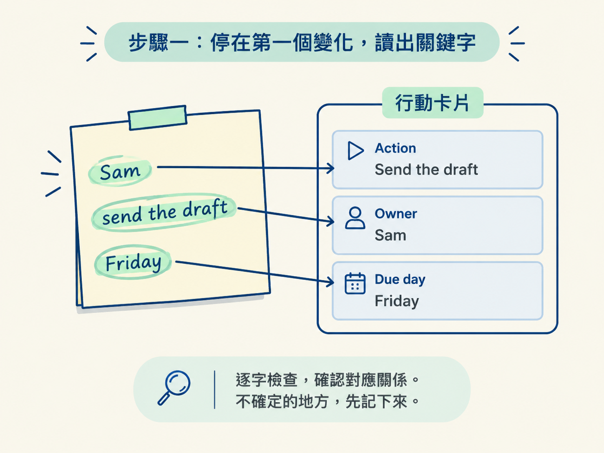
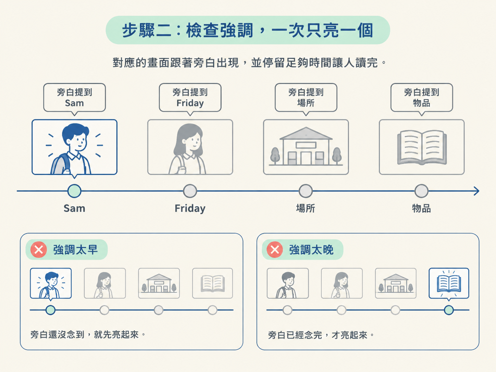
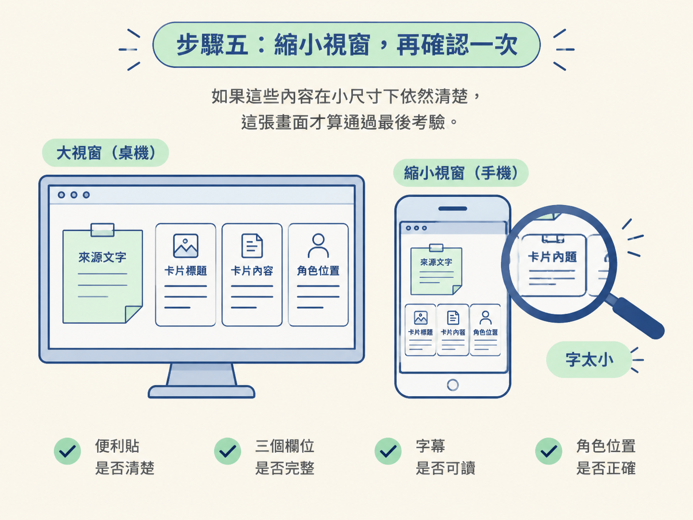

這一步的目標，是確認場景畫面真的把旁白說的內容講清楚。你會在最忙的一格檢查關鍵字、強調方式與旁白是否同步，再用靜格和縮小視窗做最後確認。
動手前，請先準備兩樣東西：一個配著核准旁白、可以播放的場景預覽，以及一份你已經審過的分鏡。接著讓 AI 從計畫裡的第一段變化開始，抓出重要節拍的靜格。做完後，你會得到一組靜格檔，並能用播放與縮小視窗的方式完成檢查。
畫面一直動時，很容易只留下「好像還不錯」的印象。眼睛來不及停在任何一格，壞掉的地方就可能悄悄溜過去。尤其某句旁白講得快、畫面元素又多時，那一格往往正是整支影片最容易出錯的地方。
所以這次不要只把預覽播過一遍。請依序停下來讀字、檢查強調、查看靜格、配著旁白播放，最後再縮小視窗確認。這樣做，是把模糊的「感覺怪怪的」變成可以指出位置、交給 AI 修正的線索。
這一步由 AI 動手準備材料，你負責確認它是否依照計畫抓出重要節拍。可以直接提出以下請求：
請從計畫裡的第一段變化開始，依序抓出重要節拍的靜格，
每個節拍各存一張。抓完之後，配著核准的旁白把整段場景播放一次，
再開一個小一點的視窗讓我檢查。AI 完成後，先確認靜格確實依序產生，並且場景預覽可以播放。接下來從第一個變化開始逐步檢查。
先播放到整段影片的第一個變化，再按下暫停。共同範例的順序是：便利貼出現、卡片從旁邊進來，接著旁白念到哪個細節，畫面就強調對應的位置。
這一輪由你檢查畫面上的文字，而不是只憑整體印象快速掃過。請慢慢確認三件事：
如果這些對應關係看不出來，觀眾就少了一條理解畫面的線索。此時不要先急著判斷好不好看，先記下是哪個字或哪個欄位不清楚。

接著由你檢查強調效果。好的畫面一次只強調一件事：旁白正在講哪個細節，那個細節才亮起來，其餘區域保持安靜。若畫面同時亮了好幾處，觀眾就像同時收到好幾個指路手勢，不知道該看哪裡。
還要確認強調出現的時機：
理想狀況是，對應的畫面跟著旁白講到的字出現，並停留足夠時間讓人讀完。

播放時一閃而過的問題，到了靜格裡通常會很明顯。現在由你打開 AI 剛才抓好的每一張靜格，依序檢查有沒有重疊：
這些問題在動態播放時可能只閃過零點幾秒，停格後卻能清楚看出來。請把發現的問題記成具體描述，例如哪一格的哪個字被哪個元素蓋住，而不要只寫「畫面有點亂」。
同時檢查畫面是否替字幕和角色預留位置。畫面不要一開始就塞得滿滿的；先留好字幕空間和角色站的位置，之後加上字幕時，才不會蓋掉原本辛苦做好的內容。
靜格檢查完後，換回動態預覽。這一輪由你配著核准的旁白，把整段場景播放一次。這次不用逐格讀字，而是檢查整體節奏：
這一輪是在抓「時間感」的問題；前面的靜格則是在抓「空間感」的問題。兩輪放在一起看，才能知道畫面既沒有撞在一起，也沒有和聲音錯開。
最後由你把預覽視窗縮小，用比較小的尺寸再看一次。這不是要精準模擬手機，而是用較小的瀏覽器面板，把「字太小」這類問題放大給你看。
你在自己的螢幕上看起來舒服的字，到了別人的手機上可能已經小到讀不出來。因此，縮小之後請重新確認：
如果這些內容在小尺寸下依然清楚，這張畫面才算通過最後考驗。

五個步驟完成後，你手上應該有一份具體的檢查結果：哪一格的字被蓋住、哪個強調時機偏了、哪一處在小尺寸下讀不到。每一項都能變成明確的修正請求，再帶回上一步學到的「哪個檔管什麼」，精準交給 AI 處理。
到這裡，畫面的正確性已經由你親自確認過。至於哪種視覺風格最好看，先留到後面的調整；這一步的任務，是確保觀眾看得懂、讀得到，也能跟上旁白。
驗證場景的順序是：停在最忙的一格讀關鍵字、確認一次只強調一個且與旁白同步、用靜格抓重疊並預留字幕與角色的空間、配旁白播放抓整體節奏，最後縮小視窗確認小尺寸下仍讀得到。每個步驟都在把「感覺」變成具體可修的線索。
當你確認這套解釋方式行得通，下一課就可以進一步處理視覺風格：換風格時，哪些東西可以調整，哪些東西一定要原封不動地留下來。